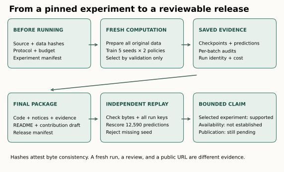
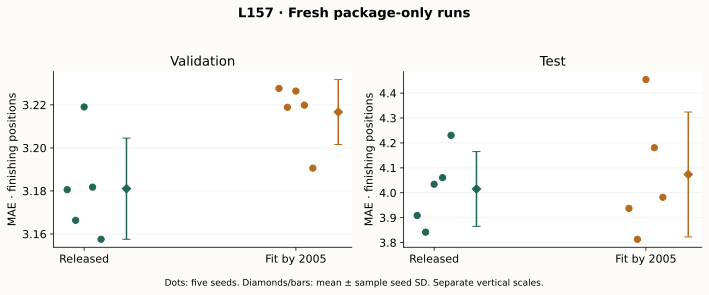

Year4 · Quarter4 · Lesson157
Open-source contribution: make your evidence reviewable
1 · Make your result usable by someone who was not there¶
Reading route. Choose a bounded claim → separate replay from training → inspect manifests → verify the package → prepare public review.
Your win: turn an experiment into a reviewable contribution whose commands, evidence and claims agree. Core lesson: about 25 minutes. Lab: one focused session; fresh training is a separate optional run.
Lesson 156 traced information through a full F1 pipeline. Its remaining gap is practical: another researcher should not need our workspace, caches or conversation to check the result. This lesson closes that gap with a standalone package. It serves the mission by making a concrete RDL result inspectable by a skeptical reader.
A reproduction repeats a specified computation. An evidence replay checks previously saved inputs and outputs. A contribution gives other people something they can use and review. A public URL establishes access; it does not establish correctness, acceptance by maintainers or learner mastery.
Start with the RelBench contribution guide. Its current tests use small synthetic fixtures, rather than full training loops. Our archived experiment belongs in a reproducibility package; a proposed upstream change needs a focused regression test against current upstream. The pinned reference implementation is the scientific baseline, not an assertion about today's code.
2 · Pick a contribution that follows from the evidence¶
There are two reasonable routes. A reproducibility repository gives readers a complete experiment, environment and report. An upstream PR changes an existing project and must fit its current interface, policies and tests. We choose the repository route because the evidence establishes a historical implementation and a declared policy sensitivity. It does not yet establish a defect in current upstream.
Our named experiment is L157 — RelBench F1 temporal-audit reproducibility release. The released baseline fits dated processors through 2010. Our intervention fits dated type discovery, vocabularies and statistics through 2005, then transforms all permitted graph rows. Sampling still uses each query's cutoff. Static versions and schedule publication histories remain unknown.
An accurate contribution title is: “Reproduce F1 preprocessing policies with explicit fit-horizon audits.” An inaccurate title is: “Prove RelBench leaks and fix its benchmark.” The stronger title requires evidence that we do not have. Likewise, neither a lower nor a higher corrected score decides which information policy matches a deployment.
3 · Separate the two commands and the two manifests¶

cli.py replay is cheap: it verifies saved evidence, reconstructs all archived labels, checks complete query keys and epochs, rescores predictions and applies claim gates. It does not rerun feature SQL or train a model. cli.py prepare downloads the exact inputs and independently reconstructs the SQL features. cli.py train builds the actual graph, fits a complete seed and saves its selected checkpoint. Ten seed commands reproduce the two full lanes.
The experiment manifest freezes the executable source and protocol before dispatch. Each completed run records its digest. The release manifest covers the final deliverable, including documentation and saved evidence. Separating them allows us to add measured results without pretending those results existed before training. Neither manifest authenticates the author's identity: an attacker who replaces both bytes and hashes can forge consistency.
Worked trace: paper/seed-0/predictions.npz has a frozen digest. Integrity checking detects a changed byte. The evaluator then checks every (driver_id, cutoff) key, aligns targets, and independently computes mean absolute error. Finally it checks that all five seeds exist. Only after these steps can a summary support the selected experiment claim. A SHA256 match alone cannot replace the latter checks.
def verify_manifest(root,files):
"""Verify listed bytes under root; hashes do not authenticate their author."""
root=Path(root).resolve()
if not files:raise ValueError('Empty evidence manifest')
for name,digest in files.items():
rel=Path(name)
if rel.is_absolute() or '..' in rel.parts:raise ValueError('Unsafe path')
path=root/rel
if any(p.is_symlink() for p in [path,*path.parents] if p!=root and root in p.parents):raise ValueError('Symlink evidence')
if not path.resolve().is_relative_to(root):raise ValueError('Escaped root')
if not path.is_file():raise FileNotFoundError(name)
if hashlib.sha256(path.read_bytes()).hexdigest()!=digest:raise ValueError('Changed evidence: '+name)
return len(files)
TODO1: implement this integrity function in the notebook. CHECK: change a byte, remove a file, and substitute a symlink. All must fail. Recall: why can an authentic-looking hash still fail to prove the scientist's conclusion?
4 · A complete recipe must survive leaving this checkout¶
The downloadable package contains visible graph/model/trainer code, independent audits, original licensed reference files, exact primary dependency versions, a pinned GPU image recipe, download hashes, the full protocol and compact evidence. Its README contains complete commands.
The fixed environment is Python 3.11, Torch 2.5.1/CUDA12.4, Frame 0.2.3, PyG 2.6.1 and pyg-lib 0.4.0, plus the pinned requirements. This specifies primary versions and records actual installed versions; it is not a hash lock of every transitive dependency or a guarantee that upstream downloads stay online.
Code and data rights are separate. Preserve the RelBench MIT notice. Our release does not bundle raw archives or pretrained weights. The pinned user-study repository had no root license at the inspected location, so the SQL is fetched from its original URL and hash-checked rather than relicensed inside this archive. Read the third-party notices before redistributing additional inputs.
The full recipe uses every 7,453 training, 499 validation and 760 test query; five seeds per policy; ten epochs per seed; two 128-channel sum-GraphSAGE layers; uniform 128/64 sampling; Adam 0.005; batch 512; L1; first strict minimum validation MAE; and training-target percentile clipping. Protocol. A smaller pilot or a subset of seeds cannot stand in for that recipe. Full model, sampler, trainer and correction are visible in the notebook's optional reproduction section.
5 · Count the evidence before summarizing it¶
def summarize_runs(rows):
"""Require all ten full runs; incomplete evidence has no pooled result."""
seen=set();by_lane={'paper':[],'fit_horizon':[]}
for row in rows:
lane=row['lane'];seed=row['seed'];key=(lane,seed)
if lane not in by_lane or type(seed) is not int or seed not in range(5):raise ValueError('Unexpected run')
if key in seen:raise ValueError('Duplicate run')
if row['status']!='COMPLETE' or row['epochs']!=10 or row['train_queries']!=7453 or row['val_rows']!=499 or row['test_rows']!=760:raise ValueError('Incomplete run presented as full')
if not math.isfinite(row['test_mae']) or row['test_mae']<0:raise ValueError('Invalid MAE')
seen.add(key);by_lane[lane].append(row['test_mae'])
complete=len(seen)==10
return dict(status='COMPLETE' if complete else 'INCOMPLETE',fits=len(seen),predictions=len(seen)*1259,
lanes={k:dict(mean=statistics.mean(v),sd=statistics.stdev(v)) for k,v in by_lane.items()} if complete else {},
missing=[dict(lane=k,seed=s) for k in by_lane for s in range(5) if (k,s) not in seen])
TODO2: produce a complete-seed summary. CHECK: delete the last intervention seed. The result must say INCOMPLETE and omit aggregate scores. Duplicate seed0 does not replace missing seed4. A ten-epoch trace must also show full training populations at every epoch; the independent evaluator checks these details before this summary receives a record.
| Fresh L157 lane | Validation MAE | Test MAE | Availability |
|---|---|---|---|
| Released baseline | 3.181057 ± 0.023513 | 4.015191 ± 0.150212 | NOT_ESTABLISHED |
| Fixed-2005 intervention | 3.216675 ± 0.015079 | 4.073480 ± 0.250688 | NOT_ESTABLISHED |

Measured policy difference: corrected minus released test MAE = +0.058289. Positive means the correction has higher error. The released mean is CLOSE to the paper test target under the frozen tolerance.
These are new L157 runs from the standalone package, separate from L156's earlier measurements. Seed SD describes variability across these five fits, not uncertainty over all possible relational databases. Integer seed matching does not ensure identical initialized weights when preprocessing changes encoder dimensions. The policy difference is descriptive; it does not establish superiority or equivalence.
Coverage: ten complete fresh fits; all 8,712 labels reconstructed; 443,552 SQL values independently checked during isolated preparation; 12,590 held-out predictions independently rescored. Both lanes check every yielded batch, original node/edge identities and each root's query cutoff. First-backward nonfinite entries per released seed: [640, 640, 640, 640, 640].
The released lane's ±0.20 descriptive comparison is with the RelBench paper Table 7 basic GNN target, validation 3.193 / test 4.022. The fixed-horizon intervention is not that paper experiment. Historical archive identity and actual feature availability remain NOT_ESTABLISHED. The source numeric encoder's nonfinite first-backward entries are retained and disclosed, not silently repaired.
Cost boundary: $7.88 reserved resources plus overhead** against the approved **$10 total cap. This is a conservative ledger, not an itemized invoice. Preparation, failures and validation count toward the cap; full runs are stopped rather than silently shortened. Budget ledger.
6 · Review the claim as carefully as the code¶
def review_claim(claim,evidence):
"""Bind each claim to its own evidence; publication needs a verified URL."""
allowed={'selected_reproduction','historically_leak_free','public_contribution','whole_paper','upstream_bug'}
if claim not in allowed:raise ValueError('Unknown claim')
if evidence.get('integrity')!='PASS':return 'REJECTED'
if claim=='selected_reproduction':return 'SUPPORTED' if evidence.get('reproduction')=='COMPLETE' else 'INCOMPLETE'
if claim=='public_contribution':return 'NOT_CHECKED' if evidence.get('public_url') else 'PENDING_PUBLICATION'
if claim=='whole_paper':return 'NOT_RUN'
# This package has no historical arrival data or current-upstream defect proof.
return 'NOT_ESTABLISHED'
TODO3: gate the requested statement using its required evidence. CHECK: ten verified fits can support selected reproduction while historical availability remains unknown and the public contribution stays PENDING_PUBLICATION. Supplying a URL alone only moves publication to NOT_CHECKED: a reviewer still needs to visit it and verify the released artifact.
The contribution draft states the question, source pin, exact commands, expected/observed contract, complete result and limitations. It invites discussion of preprocessing policy rather than declaring a general benchmark defect. Community feedback can clarify intended semantics; a local agent review cannot impersonate maintainer agreement.
To pursue an upstream patch: reproduce the issue against current upstream; check existing issues; agree on expected behavior; write a tiny failing fixture; implement the narrow change; follow project tests and formatting; then submit with the evidence. Keep the full GPU experiment outside a routine PR test suite. The current contribution guide is the authority for repository mechanics and may change.
7 · Run it from a clean directory, then defend it¶
Open the student notebook, implement the three functions and run all CHECK cells. The default notebook embeds the compact package, so it works outside this repository without fetching training data. It exports your claim review. The executed solution is author evidence, not your demonstrated mastery.
For full retraining, use the package's pinned CUDA environment, set RUN_FULL_REPRODUCTION=True in the notebook and run all. It preserves the author evidence, performs the complete preparation audit and executes all ten fits. This optional manual gate has no dollar meter; the author's managed dispatcher used the separately recorded $10 cap. Do not turn it on accidentally during a CPU replay.
EXIT: write 250–400 words defending (1) the exact supported claim, (2) why replay differs from a fresh run, (3) why the correction is a policy experiment, and (4) what remains before a public contribution is complete. Grade 0–2 each for scope, executable recipe, integrity/coverage, limitation handling and contribution clarity. Pass at 8/10 with no zero, after review. Learner status remains PENDING_WRITTEN_DEFENSE.
Tomorrow, reconstruct the two manifests and two commands from memory. In one week, diagnose a package with one missing seed and an overstrong headline. Ask the teaching agent to review your code or defense whenever a boundary is unclear.
8 · What is ready, and what remains public work¶
Delivery status: the standalone 27-code-cell solution passed in an empty directory. Its full pinned GPU gate completed ten additional fits and independently replayed another 12,590 predictions, excluded from the primary means. Desktop/mobile, 80 interactive states, keyboard/reset, print/no-JavaScript, deterministic generation and a clean Git-index Pages build passed. The final delivery checks are recorded in verification. Public contribution PENDING_PUBLICATION; live Colab and deployment NOT_CHECKED; learner PENDING_WRITTEN_DEFENSE. No upstream issue or PR has been sent.
The local lesson and contribution artifact can be checked now. A public URL, maintainer response and accepted PR are separate milestones. This prepares the public-evidence habit needed for the Year 4 synthesis and later research launch. Continue to Lesson 158 to turn this reviewable package into a bounded thesis argument. The curriculum also plans Lesson 157b on whether a schema graph is the right graph to build. That lesson is not available yet and is not a prerequisite for this route; an impeccable reproduction package cannot by itself justify that modeling assumption.